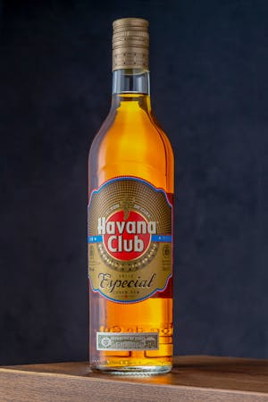
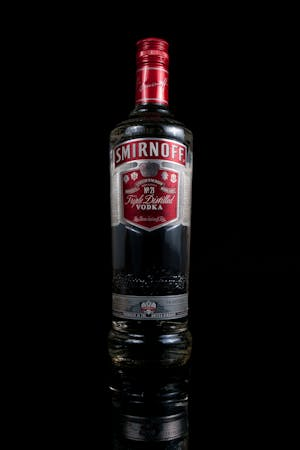
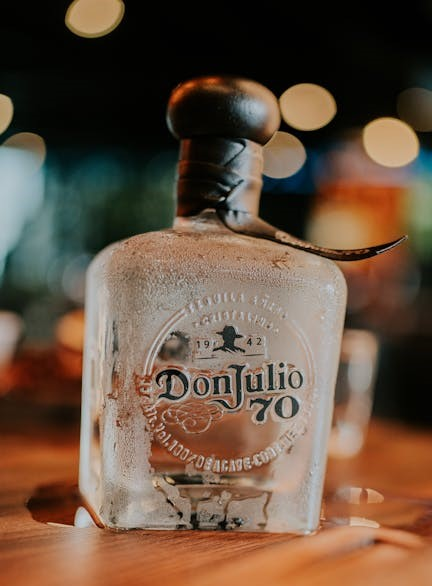
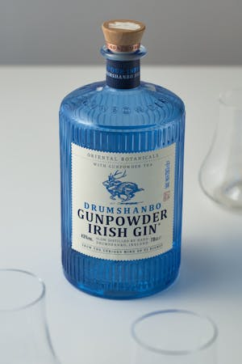

Taste:
Whiskey greets the palate with a well-rounded flavor profile. You first experience a warm, malty sweetness that gradually gives way to hints of oak, spice, and sometimes a touch of caramel or vanilla.
Aroma:
The aroma is rich and inviting, with prominent notes of toasted grains, vanilla, and caramel. There is often an undercurrent of smokiness or spice—such as cinnamon or nutmeg—that hints at the aging process in oak barrels, creating a deep, multi-layered scent.

Taste:
Rum greets the palate with a layered flavor profile that can range from delicate sweetness with hints of tropical fruit in lighter rums to rich, caramel, vanilla, and spice notes in aged, dark rums. The initial sip might reveal a burst of molasses or sugarcane sweetness, followed by subtle hints of oak, spice, and sometimes a whisper of smoke.
Aroma:
The aroma of rum is inviting and complex, combining the natural sweetness of sugarcane with notes of toasted caramel, vanilla, and spices such as cinnamon or nutmeg. In some varieties, a slight smoky or fruity nuance further enhances the overall bouquet.

Taste:
Vodka is celebrated for its exceptionally clean and neutral taste, though premium varieties often possess subtle nuances.
Aroma:
Vodka's aroma is generally light and unobtrusive, allowing its subtle flavor notes to shine.
Texture:
Vodka is renowned for its silky, smooth mouthfeel that glides effortlessly across the palate

Taste:
Tequila greets the palate with an assertive yet balanced flavor profile. The initial sip reveals the bright, slightly sweet essence of blue agave, followed by a hint of citrus and a subtle herbal complexity.
Aroma
The aroma of tequila is fresh and inviting, with prominent agave notes complemented by hints of citrus, floral undertones, and a whisper of spice. This aromatic blend sets the stage for its vibrant taste.
Taste:
The initial sip offers a burst of ripe fruit sweetness—often reminiscent of grapes, apricots, or citrus—balanced by gentle oak, caramel, and spice notes acquired through aging. Its smooth finish leaves a lingering warmth and a subtle, nuanced complexity.
Aroma:
The aroma of brandy is inviting and layered. You can detect a harmonious blend of ripe fruit, toasted oak, and hints of vanilla and spice. The fragrance evolves as you inhale, revealing underlying notes of dried fruits and a whisper of smokiness.

Taste:
Gin has bright, crisp taste dominated by juniper’s distinctive pine and resin notes. This initial burst is balanced by layers of citrus, herbs, and subtle spice, creating an evolving flavor profile that is both refreshing and complex.
Aroma:
Prominent notes of fresh juniper are complemented by hints of citrus peel, coriander, and an assortment of botanicals, resulting in a fragrant bouquet that is both invigorating and aromatic.